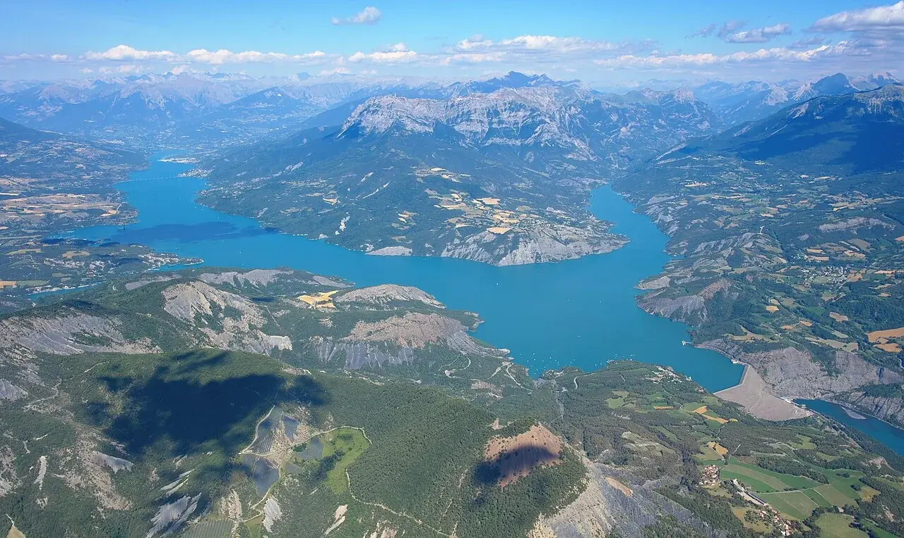

Lac de Serre-Ponçon
Hautes-Alpes, France · paddle, kayak, windsurf

La Durance et l’Ubaye se rejoignent dans cette grande retenue alpine. Des baies, des montagnes et plusieurs bases nautiques composent une étape très différente de la côte.
- Lieu
- Hautes-Alpes, France
- Niveau
- Variable selon les conditions
- Activités
- paddle, kayak, windsurf
- Type d'eau
- lake
- Coordonnées
- 44.52, 6.36 (position approximative du secteur)
Ouvrir dans Ocean Buddy Télécharger sur l'App Store
Source : Wikipédia · géographie du lieu.